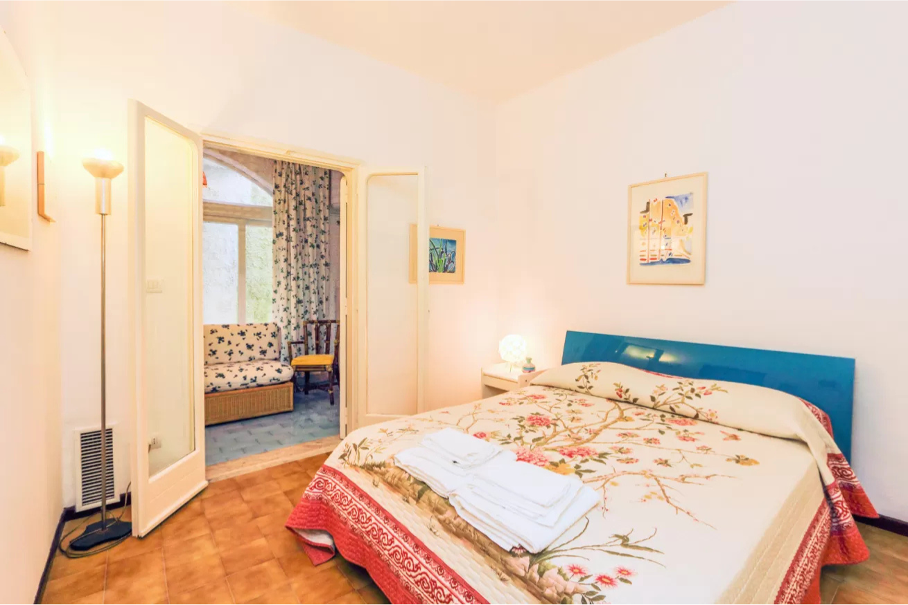
Camera matrimoniale
Una camera accogliente con letto matrimoniale, armadiature e dettagli mediterranei.
Un rifugio mediterraneo con terrazza privata vista mare, sospeso tra la quiete di Conca dei Marini e l’azzurro della Costiera Amalfitana.
Disegnata negli anni Sessanta in stile mediterraneo, Casa Roberta si trova all’interno del Residence San Pancrazio ed è pensata per accogliere coppie e famiglie con bambini.
La casa porta con sé una storia familiare speciale: i nonni del proprietario arrivarono a Conca dei Marini durante il loro viaggio di nozze e si innamorarono immediatamente di questo luogo.
Uno spazio esterno arredato con tavolo, sedie e lettini, con vista da Capo di Conca alla Baia di Salerno.
La residenza è immersa nel verde e in una zona tranquilla, ideale per chi cerca silenzio, natura e passeggiate panoramiche.
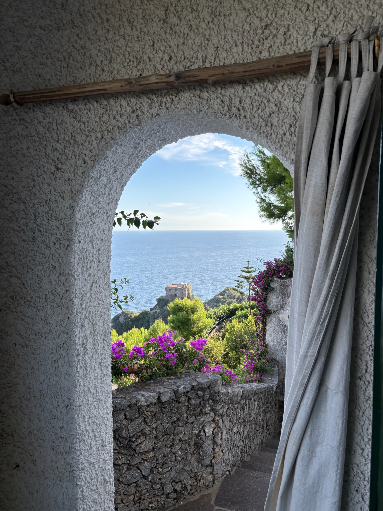
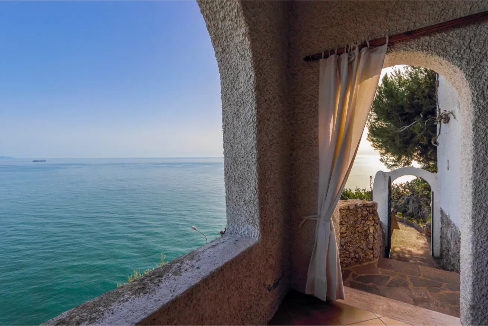
Casa Roberta ospita fino a 4 persone e dispone di una camera matrimoniale, zona living con divano letto, angolo cottura attrezzato, bagno con doccia e una seconda doccia esterna.

Una camera accogliente con letto matrimoniale, armadiature e dettagli mediterranei.
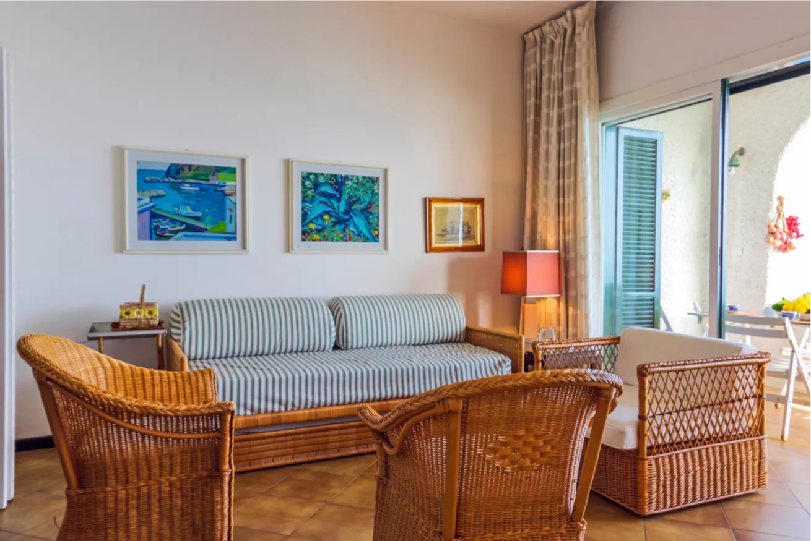
Living con divano letto, poltrone in vimini e accesso diretto alla terrazza vista mare.
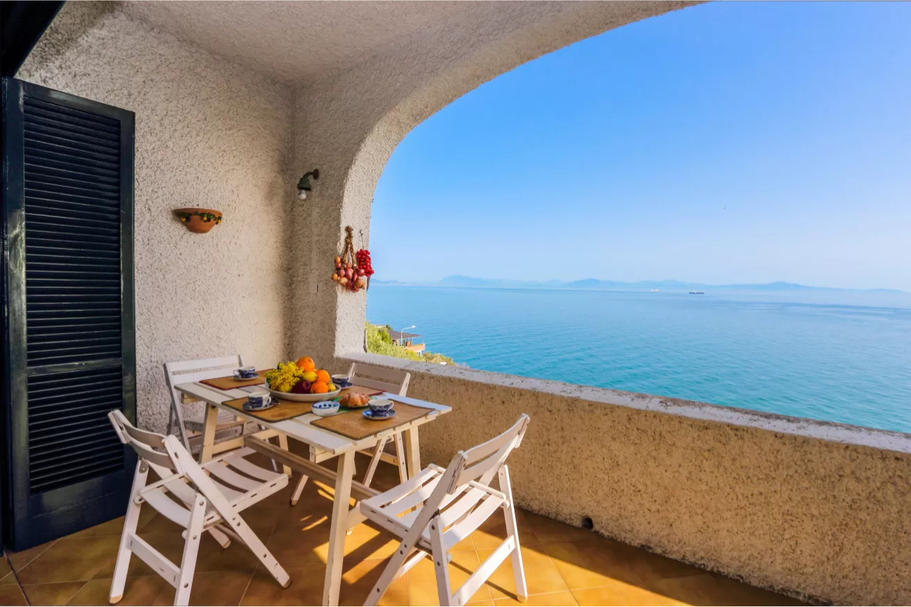
Il cuore della casa: uno spazio privato per colazioni al sole e aperitivi al tramonto.
La terrazza, gli interni e i passaggi panoramici raccontano lo stile mediterraneo della casa e la vista aperta sul mare.
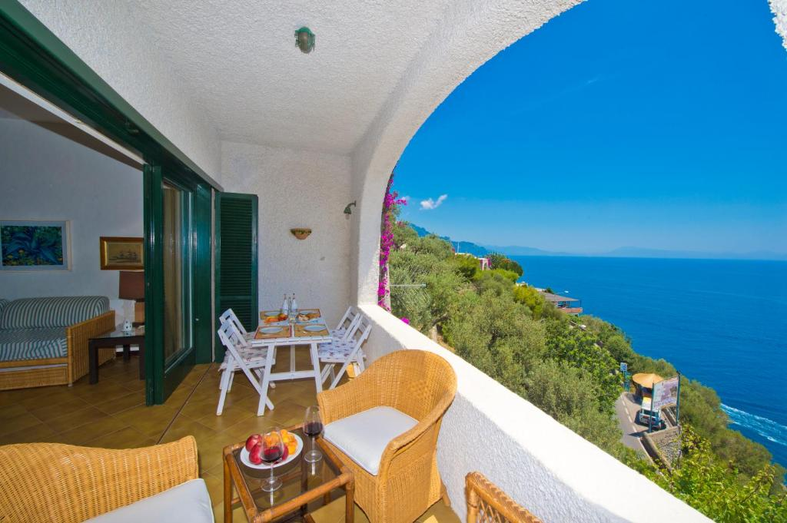
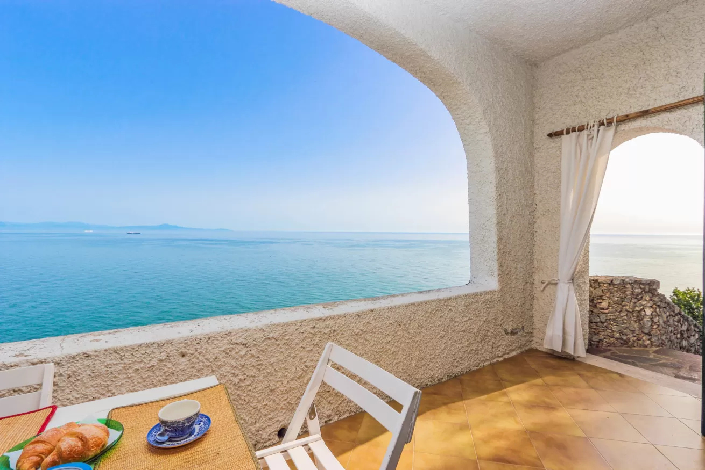
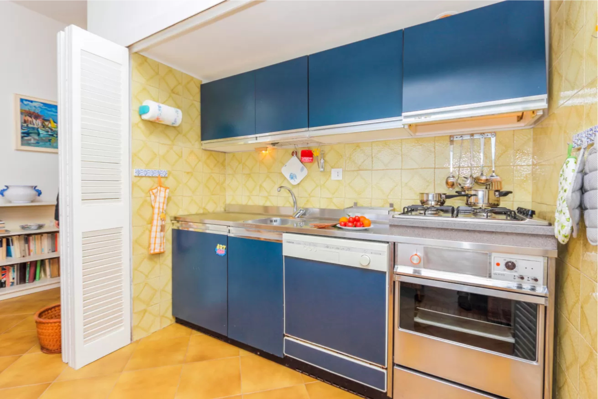
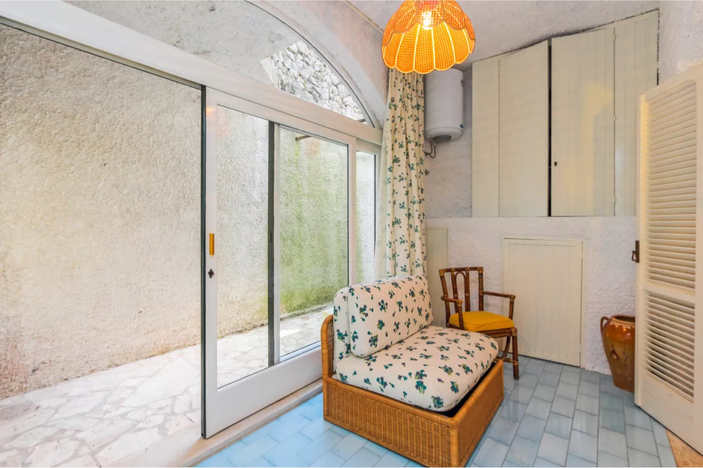
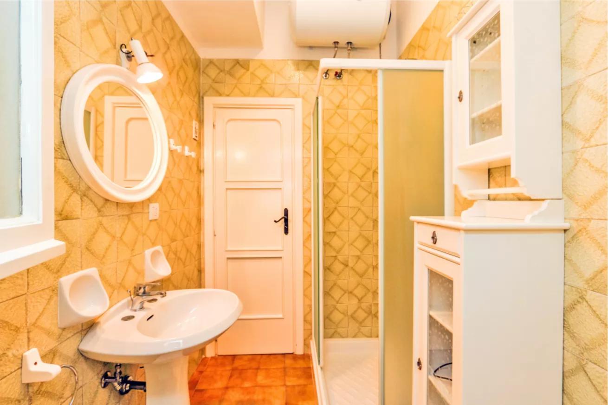
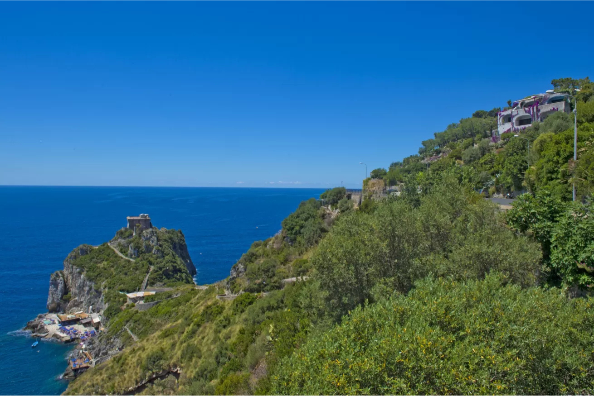
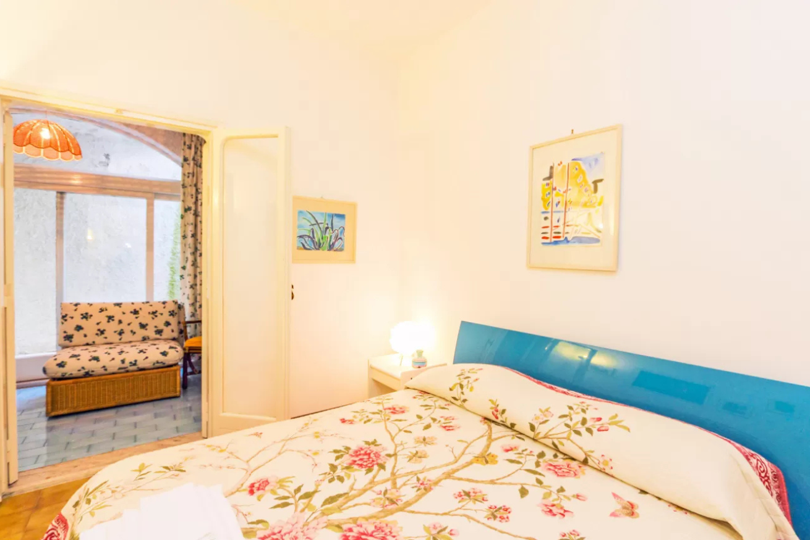
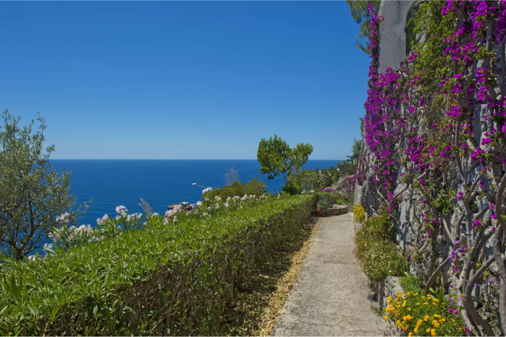
Casa Roberta si trova in Via Don Gaetano Amodio 26, nel Residence San Pancrazio, in una zona verde e silenziosa con vista aperta sul mare.
Conca dei Marini, Salerno. Clicca per aprire la posizione reale su Google Maps.
Apri su Google MapsIl calendario ufficiale e sempre aggiornato resta quello di Airbnb. Seleziona le date e verrai reindirizzato alla pagina Airbnb di Casa Roberta per verificare disponibilità e prezzi.
Nota: questo riquadro è illustrativo. La disponibilità effettiva viene verificata su Airbnb.
Compila arrivo, partenza e numero di ospiti. Il pulsante aprirà Airbnb per completare la verifica.
Casa Roberta è valutata 5.0 su Airbnb, sulla base di 5 recensioni. Gli ospiti evidenziano in particolare vista, ospitalità, pulizia, servizi e posizione.
Le singole recensioni testuali non risultano disponibili nella versione pubblica consultabile senza JavaScript; la sezione riprende quindi rating e temi evidenziati da Airbnb.
Verifica le date disponibili, consulta i prezzi aggiornati e completa la prenotazione direttamente tramite Airbnb. Per informazioni puoi anche scriverci o chiamarci.
Casa Roberta
Via Don Gaetano Amodio 26, Conca dei Marini, Salerno
Email: alecov1897@gmail.com · Tel: +39 392 452 6110
CIR / Registration details: IT065044C2BMADNKDU